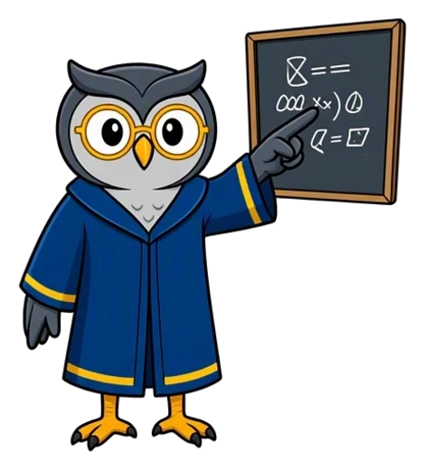

Rodrigo Martínez
Dirección de producto
Traduce las necesidades del cliente en un plan de producto. Coordina prioridades, investiga usuarios y cuida que cada decisión tenga sentido para las personas.
Visión de productoNuestra historia
IntraNerd nació de una idea compartida: la tecnología debería simplificar el trabajo, no convertirse en otro problema que resolver.
Cómo empezamos
En 2018, cuatro estudiantes que compartían la misma mesa de clases empezaron a construir herramientas para los centros de alumnos de sus colegios. Lo que comenzó como planillas para ordenar tareas se transformó en un prototipo de plataforma escolar.
La experiencia fue reveladora: los equipos no necesitaban más software, sino soluciones que entendieran su forma de trabajar. Esa pregunta —cómo hacer que la tecnología se sienta cercana— se convirtió en el propósito de IntraNerd.
Desde entonces hemos acompañado a colegios, pymes y organizaciones sociales en la creación de plataformas, portales y automatizaciones. Seguimos siendo un equipo pequeño, lo que nos permite escuchar de cerca y responder rápido.
Las personas detrás
Cuatro miradas distintas para un mismo objetivo: construir productos útiles, bien pensados y fáciles de usar.
Dirección de producto
Traduce las necesidades del cliente en un plan de producto. Coordina prioridades, investiga usuarios y cuida que cada decisión tenga sentido para las personas.
Visión de productoLiderazgo técnico
Diseña la arquitectura de las soluciones y acompaña al equipo de desarrollo. Revisa el código, cuida el rendimiento y mantiene la calidad de cada entrega.
Arquitectura y calidadExperiencia de usuario
Investiga, dibuja flujos y convierte ideas complejas en pantallas simples. Se asegura de que cada producto sea claro, accesible y agradable de usar.
Empatía con el usuarioOperaciones y soporte
Implementa las soluciones junto a cada cliente, capacita a los equipos y da seguimiento después del lanzamiento para que la tecnología siga funcionando.
Acompañamiento y mejora continuaLo que nos guía
No son frases de pared: son acuerdos que aparecen en la forma en que trabajamos, conversamos y entregamos.
Explicamos lo complejo con palabras simples y mostramos avances reales, no cajas negras.
Escuchamos antes de proponer. El proyecto se construye con el cliente, no en su ausencia.
Cumplimos lo que prometemos y cuidamos el tiempo, los datos y la confianza del equipo.
Hacemos una pregunta más, probamos otra ruta y aprendemos de cada entrega para mejorar.
Nuestro propósito es devolverle a las organizaciones el tiempo que hoy se pierde en tareas repetitivas, para que puedan dedicarlo a las personas que son parte de su comunidad.

El miembro número cinco
Nerdi nació como un dibujo en una servilleta y hoy es la cara amable de IntraNerd. Representa la curiosidad que nos impulse a preguntar, aprender y explicar mejor.
Hablemos con el equipo